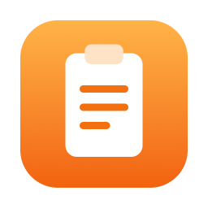

Keyboard first
Press ⇧⌘V, type a few letters, press Return. The list opens right at your text cursor, and every shortcut can be changed.

A fast, private clipboard manager for Mac and iPhone.
In development. Coming to the Mac and the App Store.
Press ⇧⌘V, type a few letters, press Return. The list opens right at your text cursor, and every shortcut can be changed.
Select several items and paste them together in a single step. One undo takes it all back.
Hold ⌥ while choosing an item, or press ⌃V anywhere, to paste clean plain text: no formatting, smart quotes, or invisible characters, with accents and emoji kept. ⌘V always pastes your latest copy unchanged.
History and pinned items sync through your own private iCloud. Pastewell has no servers and no accounts.
No analytics, no tracking, no ads. Password managers and concealed copies are never recorded.
No subscriptions and nothing locked away. Donations are welcome but never required. MIT licensed and built on Maccy, the much-loved open-source clipboard manager.
Your clipboard history is stored on your devices. If you turn on sync, it travels only through your own private iCloud account. Pastewell sends nothing anywhere else, apart from checking for updates in the Mac version, which you can switch off. If you choose to leave a tip, payment is handled by Apple or by the tip page in your browser.